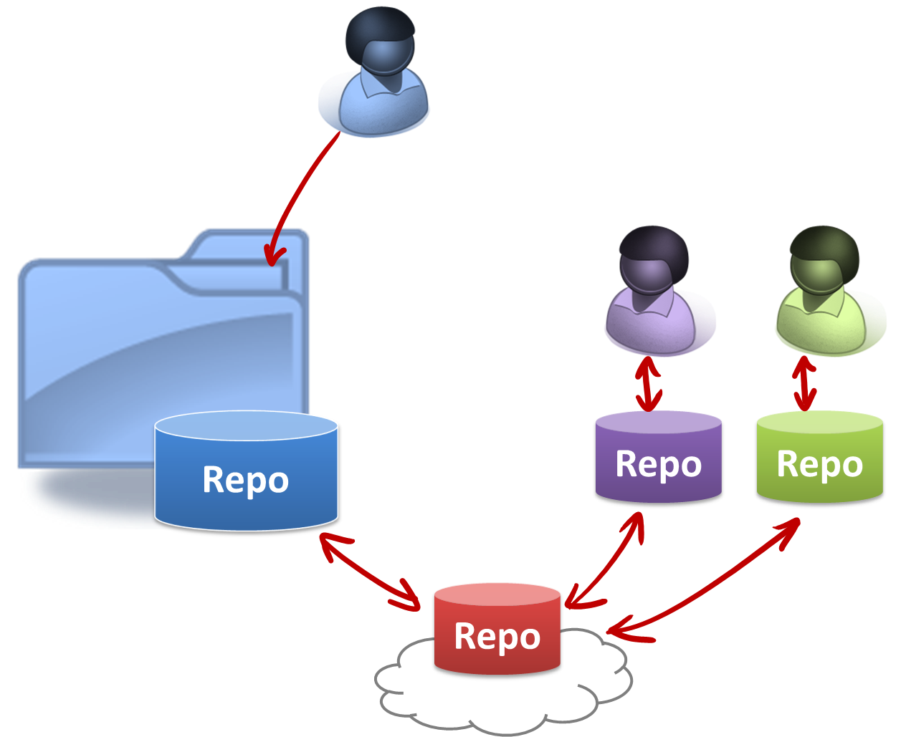

Lecture 2: The program can be small, but the code need not be smelly.
[50 minutes] Part 1 - Good code, bad code: Toward production quality code

|
Overview: Good code conforms to an accepted coding standard and follow good coding practices such as avoiding 'magic numbers'. Adding lengthy comments does not necessarily produce good code. One practice that is hard to learn but very important is to stay within the same level of abstraction inside a method. Topics: code quality |
Resources:
- Interesting side reading
- [Article] Wikipedia entry on many styles of code indentation
- [Blog post] 7 Quality Principles we can learn from Google, Facebook, Microsoft
- [Blog post] Learning from Apple's #gotofail Security Bug - How following a coding style could have prevented a major security bug.
- [Blog post] Why coding style matters - A view from a practicing software developer
- [Blog post] Understanding your own code - Blogger Eli Bendersky says 'Code that isn't readable is as bad as, or worse than code that doesn't work'
- [Web article] Top 9 qualities of clean code
- [Developer opinions] What makes a good programmer good | What makes a good programmer | How do I train myself to code faster and with fewer bugs? | What is 'good code'?
- Humor: The six most common species of code (checkout number 6!), Commenting style, XKCD on code quality
[15 minutes] Part 2 - Refactoring: from Turkey to Peacock in thousand steps

|
Overview: Improving code quality should be done as refactoring rather than rewriting. Refactoring should go hand in hand with regression testing. Topics: refactoring |
Resources:
- [Must visit, but not necessary to memorize reafactorings listed there] A catalog of common refactorings http://refactoring.com/catalog/
- [Screencast] A short refactoring demo using Eclipse
- [Forum thread] How much refactoring should I do?
[10 minutes] Part 3 - Your own private time machine: Introduction to revision control
|  |
Overview: As the code is being changed, you might want to use a revision control software to keep track of the code changes. Topics: revision control (individual) |
Resources:
- Suggested Git learning sequence:
- Git overview video (right click → open in new tab): First, watch this to get a quick overview of Git (for beginners and intermediate users)
- Git demo (right click → open in new tab): Next, watch this short Git demo from C0dePorn that shows some basic Git commands in action. If the video above was too abstract for you, this view will show you some concrete Git commands in action. This video also describes how to install Git.
- Try Git - Now, try this online Git simulation + tutorial to learn Git basics hands-on
- Git commands tutorial (from Atlassian) - If you didn’t like the simulation above, try this tutorial instead.
- Install Git on your machine. Recommended: Install SourceTree which installs both a GUI client for Git and Git itself.
- The Pro Git Book - An online version of probably the most popular book on Git. Use this as a reference to learn Git usage in more detail.
- Once you know the basic terminology, try a web search to find how to perform and Git task. e.g. how to undo a Git commit
- GUI Clients:
- SourceTree, available for both Windows and Mac